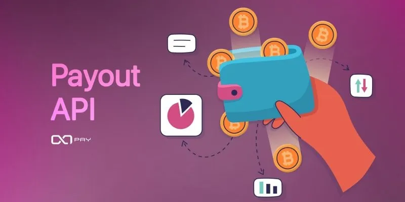

随着全球数字经济快速发展，越来越多企业开始布局东南亚市场，其中越南凭借快速增长的互联网用户规模、活跃的电子商务市场以及不断完善的数字支付基础设施，成为众多跨境企业重点关注的市场。对于希望进入越南市场的企业而言，支付系统建设是业务落地过程中必须解决的问题。无论是跨境电商、游戏平台、数字内容平台，还是SaaS服务企业，都需要一个稳定、高效、符合当地用户支付习惯的支付体系。而越南支付API接入，正成为企业快速连接当地支付生态，实现自动化交易处理的重要方式。通过API接口，企业可以将自身业务系统与越南本地支付通道连接，实现收款、付款、订单管理、资金查询等功能，大幅提升业务运营效率。
一、什么是越南支付API？
API（Application Programming Interface）即应用程序接口，是不同系统之间进行数据交互的一种技术方式。简单来说，越南支付API就是企业系统与支付服务平台之间建立的一条数据连接通道。企业无需重新开发完整支付系统，只需要通过接口调用，即可实现：创建支付订单、获取支付链接、生成二维码、查询交易状态、接收支付结果、发起资金代付、管理交易记录。例如：一家跨境电商企业在越南销售商品。当用户提交订单后：1.企业系统生成订单信息；2调用支付API创建付款请求；3支付系统返回越南本地支付方式；4用户完成付款；5支付平台通过API回调通知企业；5企业自动更新订单状态。 整个流程无需人工干预，实现自动化交易处理。
二、为什么企业需要接入越南支付API？
对于很多进入越南市场的企业来说，直接开发支付系统并不是最佳选择。主要原因包括以下几个方面。1. 降低技术开发成本。如果企业自行对接越南本地银行和支付渠道，需要投入大量技术资源。通常需要开发：多银行接口、支付页面、订单系统、风控系统、交易查询系统、对账系统。不仅开发周期长，而且后期维护复杂。通过专业越南第三方支付服务商提供的API接口，企业可以快速获得完整支付能力。无需重复建设基础设施，可以将更多资源投入到核心业务发展中。2. 快速适应越南本地支付环境。不同国家的支付习惯存在明显差异。在越南市场，消费者更加习惯：银行转账、VietQR二维码支付、本地银行卡支付、电子钱包支付。如果企业只提供国际信用卡支付，可能无法满足大量本地用户需求。通过接入越南支付API，企业可以快速接入符合当地消费习惯的支付方式，提高用户支付成功率。3. 提升交易自动化能力。传统支付方式通常需要人工确认订单。例如：用户付款后，需要客服或财务人员检查到账情况，再进行订单处理。这种方式不仅效率低，也容易产生：漏单、错单、延迟发货、API支付系统可以实现：支付完成 → 自动通知 → 自动确认订单 → 自动进入业务流程大幅提高企业运营效率。
三、越南支付API通常包含哪些核心功能？
一个成熟的越南支付接口系统，通常包含多个核心模块。1. 创建订单接口。这是支付系统最基础的功能。企业向支付平台发送：商户编号、订单金额、订单编号、商品信息、回调地址。支付系统收到请求后，会生成对应支付信息。例如：支付二维码、收银台链接、银行支付页面，方便用户完成付款。2. 支付结果回调接口。支付完成后，企业最关注的问题就是：用户是否真的付款成功？通过回调接口，支付平台可以实时通知企业系统。企业无需不断查询订单状态。例如：用户完成支付后：支付平台发送订单编号、支付金额、支付状态、交易时间。企业系统收到通知后，可以自动完成订单确认、商品发放、服务开通 3. 订单查询接口。由于网络环境、银行处理时间等因素，部分交易可能出现状态延迟。订单查询接口可以帮助企业主动获取最新交易状态。主要用于：支付异常处理、财务核对、客服查询。4. 代付接口。除了收款需求，很多企业同时需要资金分发能力。例如：商家结算、用户提现、佣金发放、企业付款 通过越南代付API，企业可以实现自动化资金支付。
四、越南API支付接入流程是什么？
通常企业接入越南支付系统，需要经过以下几个步骤。第一步：商务沟通与需求确认。企业首先需要确定业务模式：例如电商收款、游戏充值、平台提现、跨境贸易结算，不同业务场景，对支付方案要求不同。第二步：获取测试环境。支付服务商通常会提供：商户测试账号、API文档、测试密钥、接入示例，帮助企业技术团队快速了解接口规则。第三步：技术开发连接。企业开发人员根据API文档完成：参数配置、接口调用、签名验证、回调处理，一般成熟API结构设计简单，可以快速完成接入。第四步：测试交易。正式上线前，需要测试：支付流程、回调通知、异常订单、查询功能，确保系统稳定。第五步：正式上线运营。测试通过后，企业即可进入正式运营阶段。后续通过支付后台管理：查看交易数据、管理订单、查询资金流水、分析业务情况
五、企业选择越南支付API服务商需要注意什么？
API接入并不是只关注接口功能，还需要关注整体服务能力。1. 接口稳定性。支付系统需要长期稳定运行。企业应该关注：系统响应速度、通道稳定程度、订单处理能力 避免因为支付系统问题影响业务。2. 支付成功率。支付成功率直接影响企业收入。优秀支付服务商通常会通过：多支付通道、智能路由、异常切换、提高整体交易成功率。3. 数据安全。支付系统涉及大量交易数据。企业需要关注：数据加密、接口验证 、权限管理、风险控制、确保交易安全。
六、未来越南支付API的发展趋势
未来，越南支付系统将进一步向数字化、智能化方向发展。企业对于支付API的需求，也会从简单收款扩展到：综合支付管理、自动化资金管理、数据分析、风险控制 支付接口将成为企业连接越南市场的重要基础设施。
结语
对于希望进入越南市场的企业来说，搭建本地支付系统并不意味着需要从零开始开发。通过专业的越南支付API接入方案，企业可以快速连接越南本地支付资源，实现：越南本地收款、越南代付服务、自动化订单处理、智能资金管理 一个稳定、高效、安全的支付系统，不仅能够提升用户体验，也能够帮助企业降低运营成本，加快市场拓展速度。随着越南数字支付生态持续发展，API接入能力将成为企业竞争力的重要组成部分。